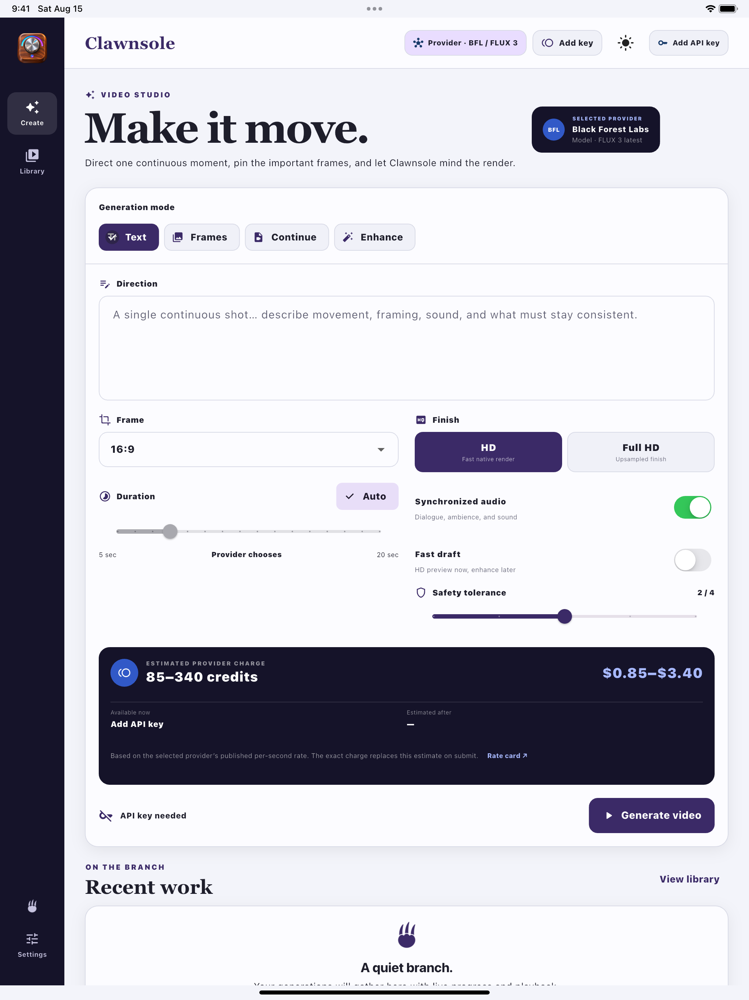

What Drive enables
Clawnsole creates an app-owned Drive folder so you can reopen generations, references, folders, and tags on another device and continue the same project workflow.
Clawnsole is an AI video generation studio. Create video from text, images, or existing clips; compare provider models and estimated costs; monitor renders; and organize completed work on desktop.
Use your own provider keys in one consistent workspace. Connect Black Forest Labs, LTX, ArtCraft, or Atlas Cloud to choose from FLUX 3, LTX, Seedance, and other supported video models. Authorize your Google account to save videos and references to Google Drive and keep them available across devices.
Latest stable release · macOS: Apple silicon, signed and notarized · Windows: x64, unsigned

Optional Google Drive connection
Clawnsole uses Google Drive only when you choose to connect it. The connection gives you user-controlled project storage and lets the same Clawnsole library remain available across your devices.
Clawnsole creates an app-owned Drive folder so you can reopen generations, references, folders, and tags on another device and continue the same project workflow.
The folder can contain prompts, generation settings and history, saved-reference metadata, retained inputs, generated media, project folders, tags, and non-secret preferences.
Clawnsole requests the narrow drive.file permission.
It can access files it creates or files you explicitly make
available to it, not the rest of your Google Drive.
Your provider API keys and Google OAuth tokens are never stored in Drive. Drive content is sent to a generation provider only when you deliberately select that content as an input. You can disconnect Drive or delete Clawnsole's Drive data at any time.
Read how Clawnsole uses Drive dataA director’s workbench
Move between Black Forest Labs, LTX, ArtCraft, and Atlas Cloud without moving your project. Each model exposes only the controls it supports.
Move from text to video, continue an existing clip, or enhance a draft without changing workspaces.
Place up to 30 reference frames. Clawnsole adapts timing and placement controls to the selected model.
Compare 10, 15, 20, and 30-second USD costs, including reference rates, and see a request estimate before rendering.
Organize inputs, settings, job state, and completed videos in one library, with optional Google Drive sync across devices.
Your keys, your choice
Clawnsole does not require a developer-operated account or cloud database. Native builds contain no analytics or ads. This splash page uses Google Analytics only after you allow optional analytics, as explained in the privacy policy. Your provider keys, prompts, media, and project history are not sent to Google Analytics.
How privacy worksThe studio, everywhere
The responsive Flutter interface keeps the complete Clawnsole workflow consistent from compact screens to wide desktop workspaces.


Ready when the idea is
macOS requires Apple silicon. Windows requires x64 and is currently unsigned. Provider usage is billed by the service you connect.